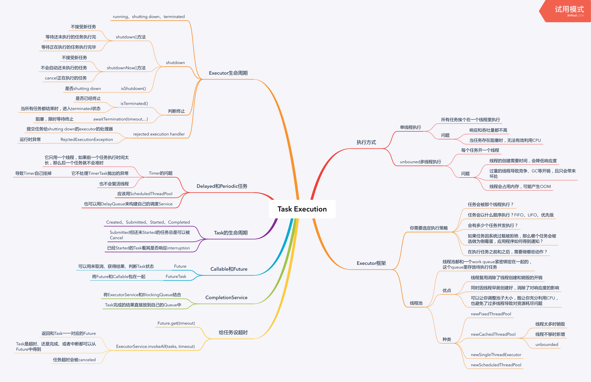

Executor框架
public interface Executor {
void execute(Runnable command);
}
public interface ExecutorService {
<T> List<Future<T>> invokeAll(Collection<? extends Callable<T>> tasks)
throws InterruptedException;
<T> List<Future<T>> invokeAll(Collection<? extends Callable<T>> tasks
long timeout,
TimeUnit unit)
throws InterruptedException;
}Shutting down
一种关闭ExecutorServic的方法：
ExecutorService exec = ...;
exec.shutdown();
exec.awaitTermination(5, TimeUnit.SECOND);另一种方法：
private ExecutorService exec = ...;
public void handleRequest() {
if (!exec.isShutdown()) {
try {
exec.submit(...);
} catch(RejctedExecutionException e) {
if (!exec.isShutdown()) {
log("task submission rejected", e);
}
}
}
}Callable和Future和FutureTask
public interface Callable<V> {
V call() throws Exception;
}
public interface Future<V> {
boolean cancel(boolean mayInterruptIfRunning);
boolean isCanceled();
boolean isDone();
V get() throws InterruptedException, ExecutionException, CancellationException;
V get(long timeout, TimeUnit unit) throws InterruptedException, ExecutionException,
CancellationException, TimeoutException;
}
public abstract AbstractExecutorService implements ExecutorService {
protected <T> RunnableFuture<T> newTaskFor(Callable<T> task) {
return new FutureTask<T>(task);
}
}CompletionService
void solve(Executor e, Collection<Callable<Result>> solvers)
throws InterruptedException, ExecutionException {
CompletionService<Result> ecs = new ExecutorCompletionService<Result>(e);
for (Callable<Result> s : solvers)
ecs.submit(s);
int n = solvers.size();
for (int i = 0; i < n; ++i) {
Result r = ecs.take().get();
if (r != null)
use(r);
}
}给任务设定超时
public void someMethod() throws InterruptedException {
List<Future<Result>> futures = exec.invokeAll(tasks, time, unit);
for (Future<Result> f : futures) {
try {
Result r = f.get();
} catch (ExecutionException e) {
// task failed with throwing exception
} catch (CancellationException e) {
// task is timeout
}
}
}